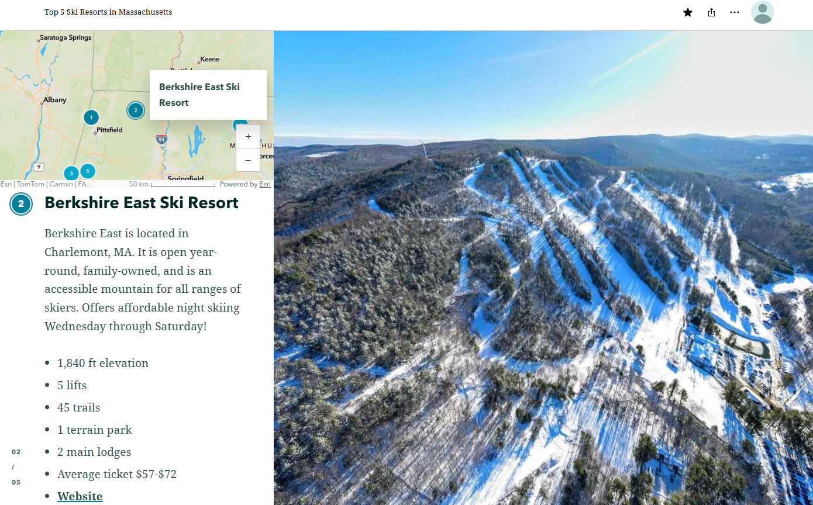
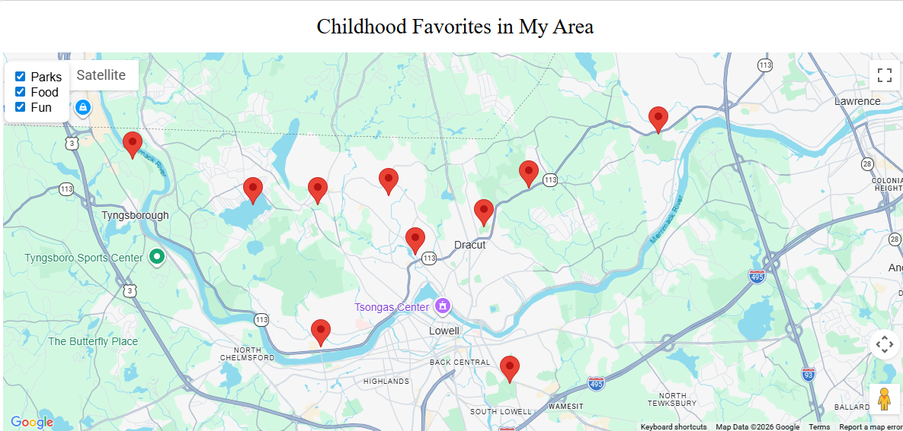
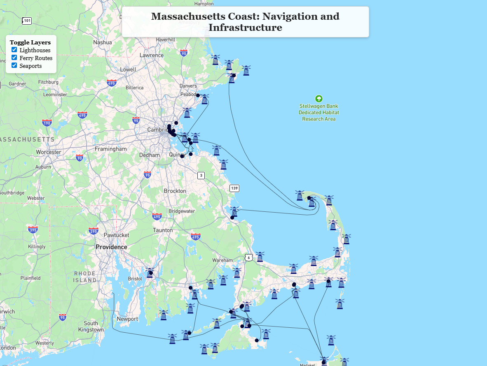

WebGIS Portfolio
This portfolio showcases three projects developed during the WebGIS course with Dr. Zhang, refined and presented as a cohesive final body of work.

An interactive web map designed to explore the location, accessibility, and terrain of ski resorts across Massachusetts.
View Web AppThis project builds on an initial ski resort map by improving both cartographic design and user interactivity. Basemap layers were standardized for a more consistent appearance, and ski resort symbols were updated with clearer mountain icons for stronger visual distinction.
Major roads and an elevation layer were added to provide transportation and terrain context. The project was further developed into a web app with layer toggle controls and a search tool that allows users to locate ski resorts relative to specific addresses.
Overall, the map evolved from a basic visualization into a more interactive tool that provides geographic context for people considering visting ski resorts in Massachusetts.

A personal interactive map highlighting meaningful childhood locations and community spaces within my hometown area.
Open ProjectThis project builds on an initial map of childhood favorite locations by adding additional points of interest and improving interactivity. Locations were organized into three categories—Parks, Food, and Fun—and each feature includes clickable popups with descriptions.
Interactive controls allow users to toggle categories on and off, while a zoom feature improves navigation and detail exploration. Layout and typography were also refined to improve overall presentation.
Although the map is personal in focus, it also serves as a simple interactive guide to local parks, restaurants, and recreational locations.

An interactive coastal map focused on navigation, transportation infrastructure, and maritime activity along the Massachusetts coastline.
Open ProjectThis project expands an initial lighthouse map by adding seaports and ferry traffic routes to create a more comprehensive coastal visualization. The map was designed to help users better understand relationships between coastal transportation systems and landmarks.
Interactive layer controls and clickable features were added to improve usability and exploration. Visual improvements included reducing label clutter, refining typography, and improving layout readability.
Overall, the project developed from a single-layer visualization into a multi-layer interactive map that supports coastal exploration and ferry route understanding.